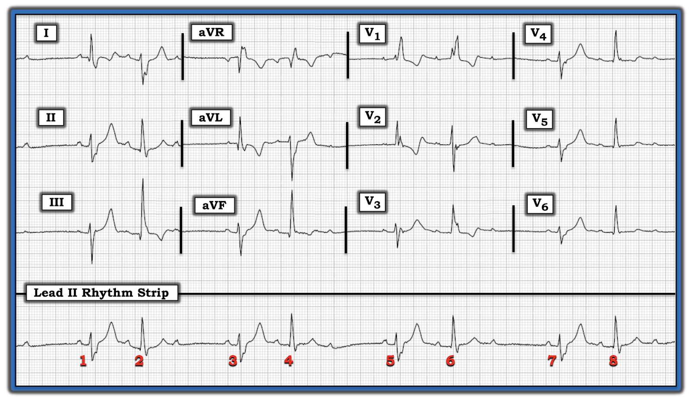
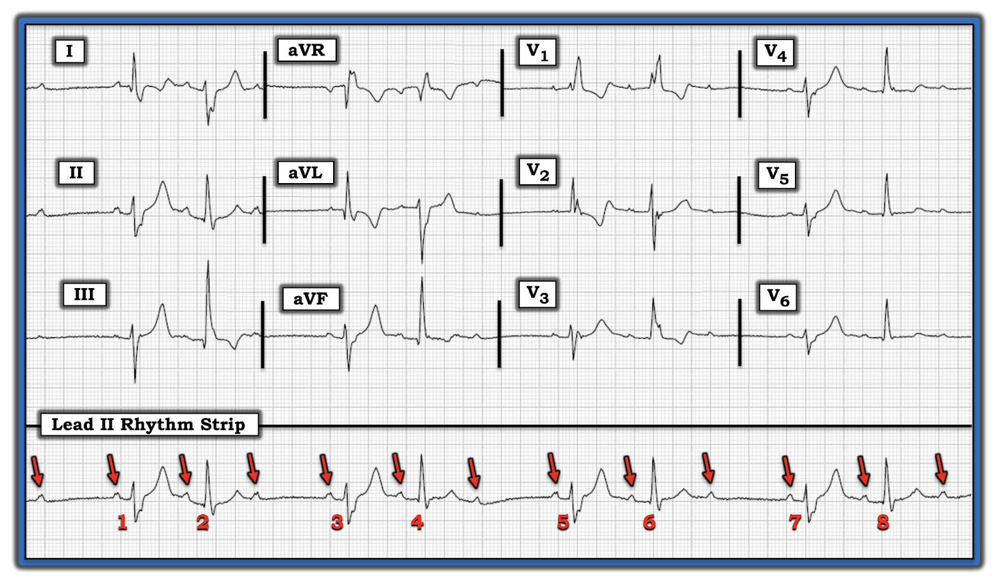
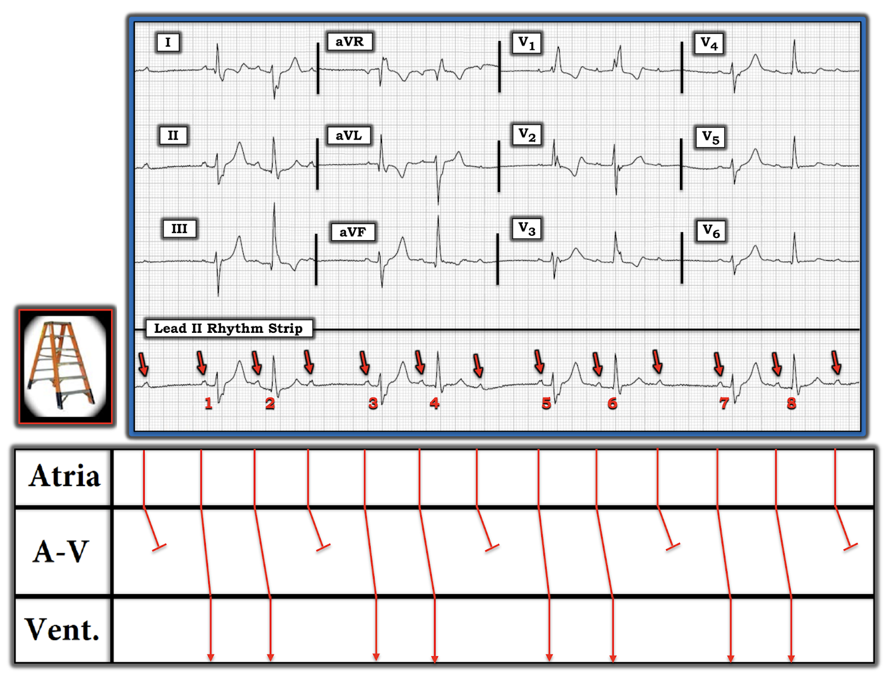
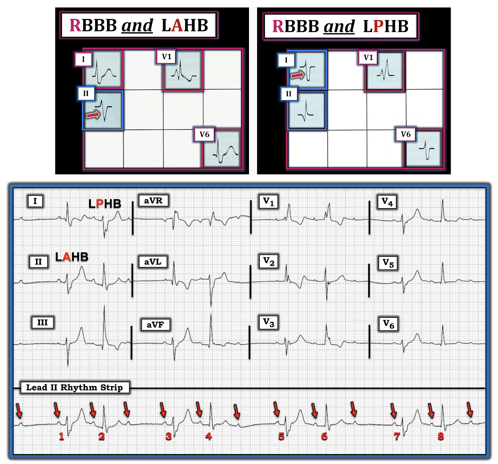
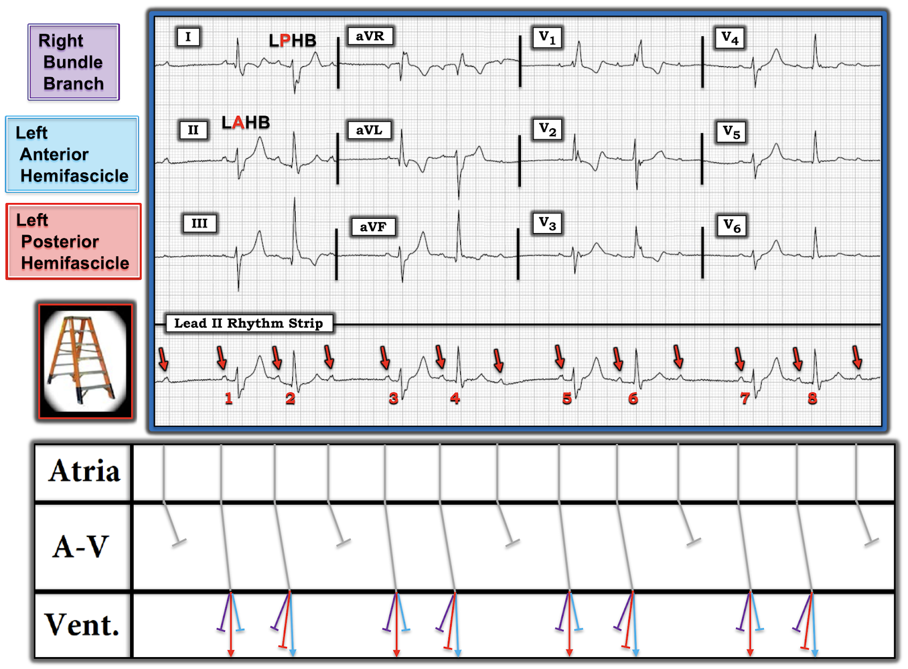

ECG Blog #206 — Có bao nhiêu rối loạn dẫn truyền?
Điện tâm đồ 12 chuyển đạo và dải nhịp DII dài trong Hình-1 được ghi ở một phụ nữ ngoài 60 tuổi, vào viện vì tiền ngất (presyncope). Xét nghiệm máu cơ bản không có gì bất thường (điện giải bình thường).
- Bạn sẽ diễn giải điện tâm đồ này NHƯ THẾ NÀO?
- Cần điều trị GÌ? Vì sao?


Cách tiếp cận CỦA TÔI với nhịp trong Hình-1:
Đây là một bản ghi rất khó! Tôi có những nhận xét ban đầu sau:
- Có nhịp theo nhóm (group beating), dưới dạng các chu kỳ ngắn–dài luân phiên, với thời gian khoảng R-R tương tự nhau (nhưng không hoàn toàn giống nhau) ở các chu kỳ ngắn hơn (tức là nhát #1-2; 3-4; 5-6; 7-8) — và ở các chu kỳ dài hơn (tức là nhát #2-3; 4-5; 6-7).
- Có sóng P khá (nhưng không hoàn toàn) đều, dương ở DII — vì vậy nhịp nền có vẻ là một dạng loạn nhịp xoang nào đó.
- QRS rộng (thời gian ít nhất 0.12 giây). Như thấy rõ nhất trên dải nhịp DII dài — hình dạng QRS luân phiên cứ cách một nhát.
ĐIỂM THEN CHỐT (PEARL) #1: Bước đơn giản là đánh dấu sóng P trong một rối loạn nhịp phức tạp thường giúp nhận ra điều gì đang diễn ra dễ dàng hơn rất nhiều (các mũi tên ĐỎ trong Hình-2).
- Đặt compa đo (calipers) theo khoảng P-P gợi ý giữa bất kỳ 2 sóng P liên tiếp nào sẽ giúp “dò theo” nhịp nhĩ (qua đó xác nhận cơ chế xoang nền).


ĐIỂM THEN CHỐT (PEARL) #2: Thường thấy tần số nhĩ thay đổi nhẹ khi có blốc AV độ 2 hoặc độ 3. Hiện tượng này được gọi là loạn nhịp xoang theo pha thất (ventriculophasic) — và được cho là do tưới máu tốt hơn, dẫn đến khoảng P-P ngắn lại nhẹ ở những sóng P “kẹp” một phức bộ QRS ở giữa — và khoảng P-P dài ra nhẹ ở những khoảng không chứa QRS nào ở giữa.
ĐIỂM THEN CHỐT (PEARL) #3: Việc phát hiện một cơ chế xoang (trong ca này là loạn nhịp xoang theo pha thất) nền — kèm theo nhịp theo nhóm phải ngay lập tức gợi ý khả năng Wenckebach AV ( = Mobitz I, blốc AV độ 2) cho nhịp mà ta thấy trong Hình-2.
- Chẩn đoán Wenckebach AV trong ca hôm nay có thể được xác nhận bằng các nhận xét bổ sung sau: i) Cùng một khoảng PR kết thúc mỗi khoảng ngưng trong nhịp này (tức là thấy khoảng PR ~0.16 giây trước các nhát #1, 3, 5 và 7); ii) Sau đó khoảng PR tăng thêm một lượng tương đương ở nhát thứ 2 của mỗi nhóm (tức là thấy cùng một khoảng PR ~0.24 giây trước các nhát #2, 4, 6 và 8); và, iii) Sóng P thứ 3 trong mỗi nhóm không được dẫn truyền.
- Do đó — có blốc AV độ 2, Mobitz loại I (Wenckebach AV) với dẫn truyền AV 3:2 (tức là mỗi nhóm có 3 sóng P, trong đó chỉ 2 sóng P được dẫn truyền).
GIẢN ĐỒ BẬC THANG (LADDERGRAM):
Cách dễ nhất để minh họa dạng blốc AV độ 2 này là vẽ một giản đồ bậc thang (Hình-3).
- LƯU Ý: Để ôn lại cách đọc (và vẽ) giản đồ bậc thang — xem ECG Blog #188).


Ca hôm nay (tiếp theo):
Ca hôm nay còn nhiều điều hơn thế! Chúng ta vẫn cần giải thích VÌ SAO hình dạng phức bộ QRS luôn thay đổi từ nhát này sang nhát kế tiếp (Hình-4).
- Hãy nhìn chuyển đạo V1 trong Hình-4. Mặc dù hình dạng QRS khác nhau ở 2 nhát thấy trong chuyển đạo này (tương ứng với nhát #5 và 6 trong Hình-4) — cả hai phức bộ QRS ở V1 đều phù hợp với RBBB (tức là dạng rsR’ kèm QRS giãn rộng). Sự hiện diện của RBBB trong Hình-4 được xác nhận bởi sóng S tận rộng ở các chuyển đạo bên I và aVL.
- Điểm MẤU CHỐT: Việc có một dải nhịp DII dài ghi đồng thời ở phía dưới điện tâm đồ 12 chuyển đạo trong Hình-4 là vô giá trong ca hôm nay, giúp làm rõ nhát nào ở mỗi chuyển đạo trong 12 chuyển đạo tương ứng với dạng nào trong 2 hình dạng QRS.
- Hình dạng QRS ở các chuyển đạo MẤU CHỐT đối với blốc hai phân nhánh đã được ôn lại trong ECG Blog #205. Để cho rõ, tôi đã thêm một lời nhắc trực quan ở đầu Hình-4, cho thấy cách nhận biết 2 dạng blốc hai phân nhánh ( = RBBB/LAHB và RBBB/LPHB).
- HÃY NHÌN hình dạng QRS của nhát #1 trong Hình-4 ở các chuyển đạo I, II và III ghi đồng thời. Dạng qRS ở chuyển đạo I, với sóng S tận rộng ở chuyển đạo này, phù hợp với RBBB. Kết hợp với RBBB — QRS âm ưu thế ở chuyển đạo II và III của nhát #1 phù hợp với LAHB (blốc phân nhánh trái trước – Left Anterior HemiBlock). Do đó, nhát #1 dẫn truyền theo kiểu blốc hai phân nhánh RBBB/LAHB.
- Bây giờ HÃY NHÌN nhát #2 ở các chuyển đạo I, II và III ghi đồng thời. Vẫn có sóng S tận rộng ở chuyển đạo I, phù hợp với RBBB. Nhưng hãy để ý phần đi xuống ban đầu (tức là phần thẳng) của sóng S ở chuyển đạo I dốc như thế nào. Cùng lúc đó — hãy để ý sự thay đổi hình dạng QRS ở chuyển đạo II và III của nhát #2, lúc này có dạng qR phù hợp với LPHB (blốc phân nhánh trái sau – Left Posterior HemiBlock). Vì vậy, nhát #2 dẫn truyền theo kiểu blốc hai phân nhánh RBBB/LPHB.
- Áp dụng các nhận xét này vào sự thay đổi hình dạng QRS mà ta thấy xảy ra cứ cách một nhát trên dải nhịp DII dài — ta có thể suy ra có một kiểu blốc phân nhánh luân phiên, trong đó các nhát lẻ (tức là nhát #1,3,5,7) đều dẫn truyền kiểu RBBB/LAHB — còn các nhát chẵn (tức là nhát #2,4,6,8) dẫn truyền kiểu RBBB/LPHB.


GIẢN ĐỒ BẬC THANG với các biến cố ở 3 phân nhánh dẫn truyền chính:
Để minh họa rõ hơn kiểu dẫn truyền luân phiên phức tạp trong ca hôm nay — tôi biểu diễn theo sơ đồ trong Hình-5 các biến cố xảy ra ở Tầng thất đối với 3 phân nhánh dẫn truyền chính, mỗi phân nhánh được mã hóa bằng một màu.
- RBBB có mặt ở tất cả các nhát trên bản ghi này. Sự blốc dẫn truyền qua nhánh phải này được biểu diễn bằng các đường màu TÍM có đầu cụt ở Tầng thất cho cả 8 nhát trong Hình 5.
- Như đã nói ở trên — các nhát lẻ (tức là nhát #1,3,5,7) được dẫn truyền theo kiểu blốc hai phân nhánh RBBB/LAHB. Điều này có nghĩa là sau khi đi qua nút AV và bó His — dẫn truyền qua tâm thất diễn ra qua phân nhánh trái sau còn nguyên vẹn (các mũi tên ĐỎ trong Tầng thất ở nhát #1,3,5,7).
- Ngược lại — các nhát chẵn (tức là nhát #2,4,6,8) được dẫn truyền theo kiểu blốc hai phân nhánh RBBB/LPHB. Điều này có nghĩa là sau khi đi qua nút AV và bó His — dẫn truyền qua tâm thất diễn ra qua phân nhánh trái trước còn nguyên vẹn (các mũi tên XANH DA TRỜI nhạt trong Tầng thất ở nhát #2,4,6,8).


ĐIỀU CỐT LÕI: Hẳn đã rõ rằng người phụ nữ ngoài 60 tuổi vào viện vì tiền ngất này có bệnh hệ thống dẫn truyền nặng:
- Nhịp nền là loạn nhịp xoang theo pha thất. Do thường xuyên có các nhát không được dẫn truyền — tần số thất chung chậm.
- Có ST-T đảo ngược bất thường ở các chuyển đạo I, aVL và V2, kèm ST-T dẹt ở một số chuyển đạo khác. Khó xác định đây có phải là thiếu máu cục bộ mới xảy ra hay không, do có nhịp chậm và các rối loạn dẫn truyền.
- Có blốc AV độ 2, Mobitz loại I (với dẫn truyền AV 3:2).
- Có RBBB hoàn toàn.
- Có blốc phân nhánh luân phiên (với kiểu blốc hai phân nhánh chuyển đổi từ nhát này sang nhát kế tiếp, từ RBBB/LAHB sang RBBB/LPHB).
Theo dõi diễn tiến ca bệnh: Bệnh nhân đã được cấy máy tạo nhịp hai buồng, vì các triệu chứng của bà xảy ra kèm theo bệnh hệ thống dẫn truyền nặng.
==============================
Các bài liên quan trên ECG Blog với ca hôm nay:
- ECG Blog #186 – Khi nào nên nghi ngờ Mobitz I
- ECG Blog #62 — Blốc AV độ 2 Mobitz I so với Mobitz II.
- ECG Blog #164 — Ôn lại một ca khác với phân tích từng bước về Mobitz I.
- ECG Blog #188 — Cách đọc (và vẽ) giản đồ bậc thang.
- ECG Blog #205 — Ôn lại các blốc hai phân nhánh.
- ECG Blog #130 — Blốc nhánh luân phiên (RBBB/LBBB).
- ECG Blog #232 — Tìm hiểu thêm về nhịp đôi (khi nhát thứ 1 trong mỗi cặp là nhát dẫn truyền từ xoang).
-------------------------------------------------------------------------
- Lời cảm ơn: Xin cảm ơn Ser Barsa (từ Yerevan, Armenia) và J.B. (từ Vương quốc Anh – UK) đã cung cấp ca bệnh và bản ghi này.
-------------------------------------------------------------------------